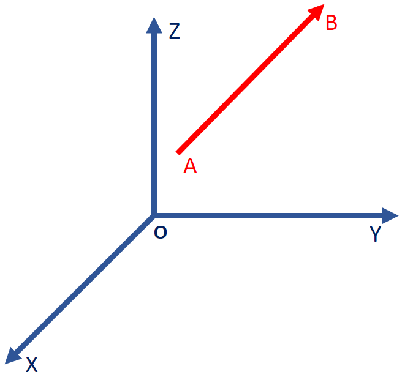
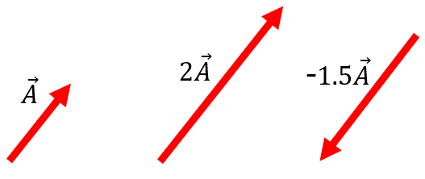
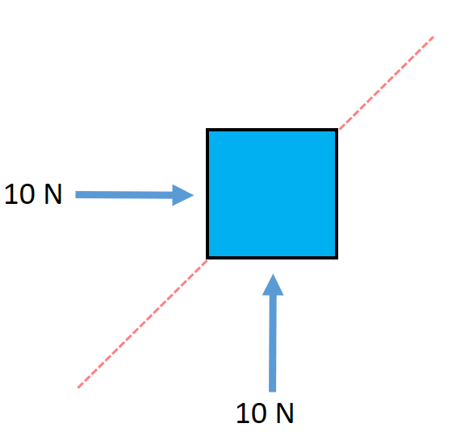
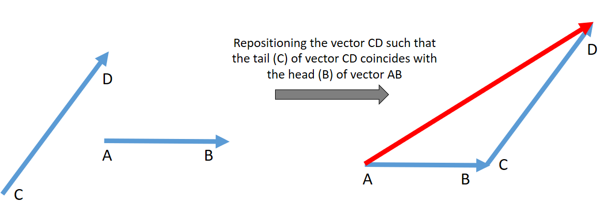
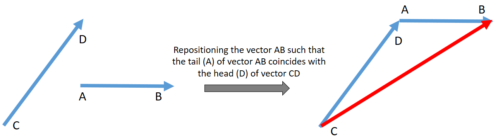
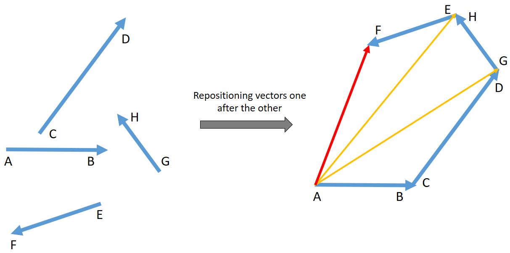

HOME BLOG EBOOKS ABOUT CONTACT SHOP
In physics, quantities can be classified into 2 main categories; Scalars and Vectors. Certain quantities such as mass, time, temperature, volume, density etc. can be adequately represented just by a numerical value, an amount or a magnitude. Such quantities are called Scalars. For example, if the mass of an object is given as 2 kilograms, the value 2 denotes the number of times the unit kilogram is contained in that object.
On the other hand, certain other quantities such as force, velocity, displacement, acceleration etc. cannot be adequately represented by a numerical value alone. The only way to meaningfully represent such quantities is by considering them as having a direction in addition to the magnitude. Such quantities that have a magnitude as well as a direction are called Vectors. For example, if you walk 2 miles north, then walk 2 miles south, you are back at your original position i.e. your net displacement is zero. Now instead had we just mentioned the magnitude and ignored the directions, there’s no way of telling your net displacement, you could have walked 4 miles straight or 4 miles left or whichever way possible.
Vectors are represented by a directed line segment, basically arrows. The length of the line segment denotes the magnitude and the arrowhead indicates the direction of the vector. For example, a vector from point A to another point B is denoted by . Point A is called the tail of the vector and point B is called the head of the vector. The magnitude of a vector
is denoted as |AB|.

Note that a vector is characterized only by its magnitude and direction, and not by its position in space. This implies that as long as the magnitude and the direction are unaltered, you are free to move the vector around.
When a vector is multiplied by a positive scalar quantity (a positive number), its magnitude gets multiplied by the scalar quantity and the direction remains unaltered. Similarly, if a vector is multiplied by a negative scalar quantity, its magnitude gets multiplied by the scalar quantity and its direction reverses.
The product of a scalar x and vector is denoted as x
.

Vector addition isn’t as straightforward as adding scalar quantities. In case of vectors, the directions have to be considered as well. Consider the following example of a solid block being applied 10 Newtons of force from 2 directions as shown in the figure below.

In which direction do you think the block will move as a result of these 2 forces? Of course, along the dotted line. Now imagine that the block is being pushed with 20 Newtons of force from the bottom and 10 Newtons of force from the side as before. In which direction do you think the block will move now? Common sense says the block will move in a direction slightly to the left of the dotted line.
What we just did with these 2 examples is Vector addition. Now let’s consider a general case where 2 vectors are oriented at a certain angle from one other as shown below.

To find the sum or the resultant of 2 vectors, reposition any one of the vectors such that the tail of the one vector coincides with the head of the other vector, then the line segment that completes the triangle denotes the resultant vector. This is called the triangle law of vector addition. In the figure above, we repositioned vector such that the tail (C) of vector
coincides with the head (B) of vector
. Hence the resultant is given by the vector
. Now if you try the same, but by repositioning vector
instead of
, you will get the exact same result, proving that vector addition is commutative.

We can extend this idea to any no of vectors and this rule is known as the Polygon law of vector addition.
